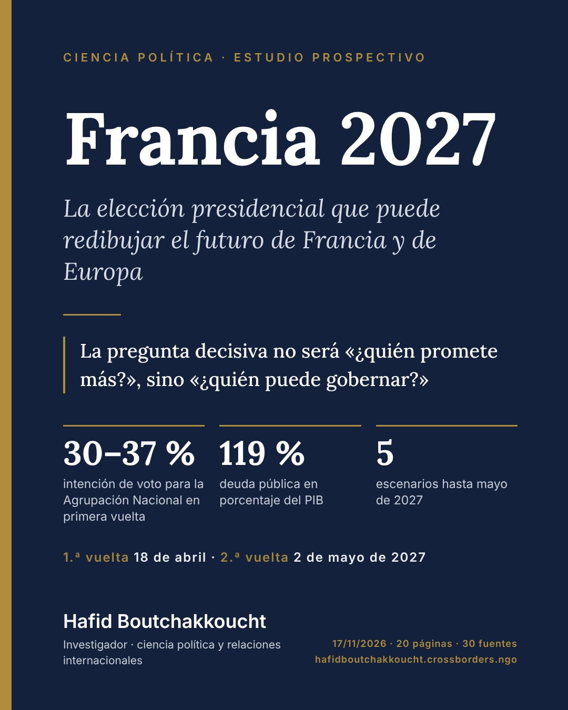

← Publicaciones · Estudio de ciencia política y prospectiva · Ciencia política
Francia 2027
La elección presidencial que puede redibujar el futuro de Francia y de Europa
Descargar el PDF · 20 páginasLeer en líneaCitar este estudio
- Autor
- Hafid Boutchakkoucht
- Publicación
- 17 de noviembre de 2026
- Tipo
- Estudio de ciencia política y prospectiva
- Idioma
- Texto en francés
- Enfoque
- Ciencia política comparada, sociología electoral y prospectiva estratégica

Cartel del estudio

El estudio en cifras
- 30–37 %
- intenciones de voto para la Agrupación Nacional en la primera vuelta, principios de noviembre de 2026
- 119 %
- deuda pública en porcentaje del PIB, finales de junio de 2026
- 5
- escenarios hasta mayo de 2027
- 30
- fuentes numeradas
Cifras tomadas del estudio.
Comentario
Este estudio no pretende designar a un ganador. Desplaza la pregunta: de la competencia entre promesas a la capacidad de gobernar. Confronta las encuestas, las estadísticas oficiales y las posiciones públicas de los candidatos con las grandes teorías de los sistemas de partidos, de Duverger a Peter Mair.
Lo esencial
- La Agrupación Nacional domina la primera vuelta, con entre el 30 y el 37 % de las intenciones de voto, pero aún debe ganar cerca de veinte puntos para imponerse en la segunda.
- La decisión del Tribunal de Casación sobre la elegibilidad de Marine Le Pen se espera, a más tardar, a principios de abril de 2027, pocos días antes de la primera vuelta.
- El Partido Socialista confió la candidatura a Raphaël Glucksmann; sigue siendo una maquinaria electoral, un negociador del programa y un árbitro de la segunda vuelta.
- Ucrania es la línea divisoria estratégica de la campaña: un cambio de rumbo francés pesaría sobre la cohesión europea y sobre la relación transatlántica.
A quién se dirige este texto
Responsables públicos, diplomáticos, periodistas políticos, investigadores y estudiantes de ciencia política y relaciones internacionales.
Resumen
Este estudio analiza la elección presidencial francesa del 18 de abril y el 2 de mayo de 2027 a partir de una tesis: la votación no se decidirá en torno a quién promete más, sino en torno a quién puede gobernar. Con datos al 17 de noviembre de 2026, cartografía las fuerzas políticas, muestra que el Partido Socialista optó por seguir siendo un actor autónomo sin candidato propio, compara las orientaciones de los programas y mide las restricciones que el próximo presidente no elegirá: una deuda pública del 119 % del PIB, un Parlamento fragmentado y una guerra a las puertas de la Unión. Propone cinco escenarios, una matriz de variables decisivas y una lectura de las consecuencias para Europa, Estados Unidos y Marruecos.
Traducción del resumen del autor.
Resumen original (francés)
Cette étude analyse l’élection présidentielle française des 18 avril et 2 mai 2027 à partir d’une thèse : le scrutin ne se jouera pas sur la question « qui promet le plus », mais sur la question « qui peut gouverner ». Arrêtée au 17 novembre 2026, elle cartographie les forces en présence, montre que le Parti socialiste a choisi d’être un acteur autonome sans candidat propre, compare les orientations des programmes et mesure les contraintes que le prochain président ne choisira pas : une dette publique de 119 % du PIB, un Parlement fragmenté et une guerre aux portes de l’Union. Elle propose cinq scénarios, une matrice des variables décisives et une lecture des conséquences pour l’Europe, les États-Unis et le Maroc.
Citar este estudio
Boutchakkoucht, H. (2026). France 2027 : l’élection présidentielle qui peut redessiner l’avenir de la France et de l’Europe. Estudio de ciencia política y prospectiva, 17 de noviembre de 2026. https://hafidboutchakkoucht.crossborders.ngo/publications/france-2027/
Leer en línea
Si el lector no se muestra en su dispositivo, utilice el botón de descarga.
Descargar el PDFEscribir al autor
Otro estudioIrse, quedarse o hacerse oír